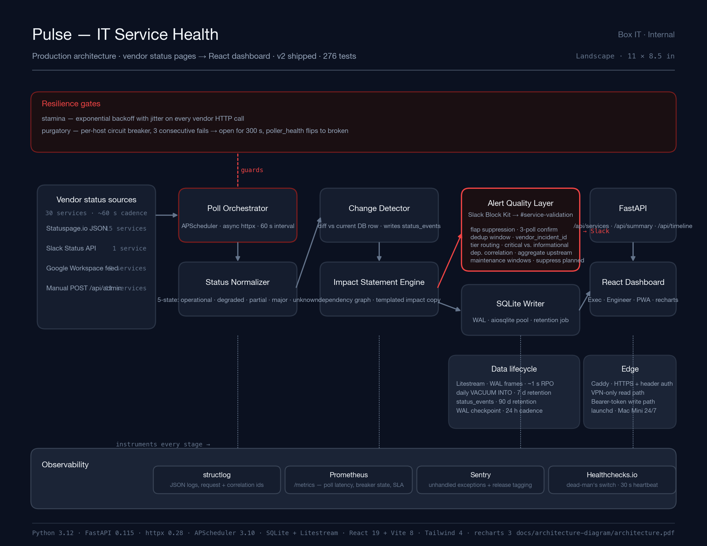
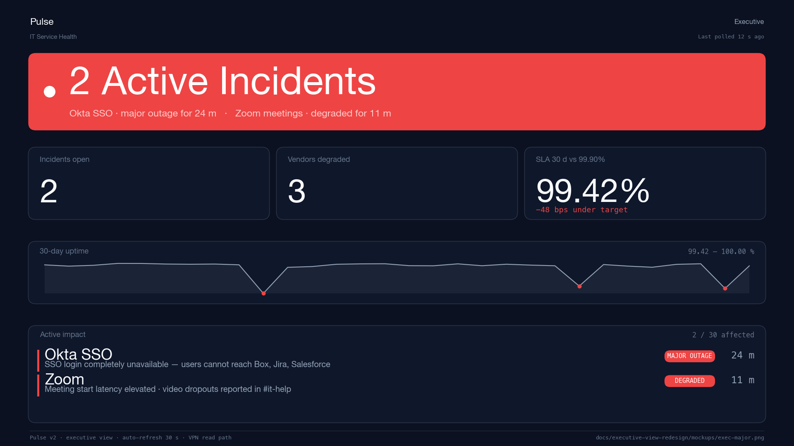

Case study · Platform engineering · 2025–2026
Pulse.
Production-grade vendor-health monitoring for IT ops. Thirty SaaS vendors, sixty-second cadence, and one panel that reads from the back of a conference room.
01 · ProblemThe vendor-health signal is broken at the operator's desk.
A mid-size IT team supports thirty SaaS vendors. The vendors publish status pages. The status pages lie, lag, or disagree. The help desk fills in the gap.
Every outage arrives at the help desk before it reaches the vendor's status page. By the time the page flips to yellow, users have already filed tickets, pinged Slack, and escalated to a manager. The vendor's incident is twenty minutes old. The operator's inbox is forty.
The signal is fragmented, too. Statuspage.io publishes clean JSON for most vendors, but Google Workspace has its own dashboard, Slack has a dedicated API, and eleven of the thirty services have no programmatic feed at all. Eleven services means eleven manual status updates, each of which goes stale within an hour of the engineer who posted it walking away from their desk.
Slack, which is where the operators live, quickly becomes the war room and the noise floor at the same time. Alerts arrive on the same channel as brownouts, flapping pollers, and planned vendor maintenance windows no one remembered to acknowledge. When an operator has triaged fifty alerts in a week and only three were real, they learn to mute the channel. The next real incident lands in a channel that is, structurally, ignored.
And above the operator's desk, a director wants one number. They walk up to the big screen in the boardroom and expect the meter to say something. The NOC wall shows eighty tiles and a four-hour timeline. That is the wrong interface for the question being asked.
02 · Baseline architectureWhat the dashboard does, in one sentence and one picture.
Pulse polls every vendor on a sixty-second interval, normalises each response into a five-state enum, detects changes against what it already knows, writes an audit event, enriches the event with a templated impact statement derived from a service dependency graph, posts one clean Block Kit message to Slack, and serves the current world state to a React dashboard as JSON. That sentence is the product.
The shape of the pipeline matters less than the shape of its failure modes. Vendor APIs fail. Status pages lie. The poller itself runs for months without restart. A correct dashboard is one that answers the question is this service up? honestly, even when the thing it is polling has lost the ability to say.
The production architecture, below, shows every gate the signal passes through on the way from a vendor's status endpoint to a director's screen. Resilience along the top, alert quality in the middle, observability along the bottom, persistence and edge off to the right.

The five states, and why one of them is "unknown"
The status normaliser collapses each vendor's proprietary
vocabulary into five values: operational,
degraded, partial_outage,
major_outage, unknown. The first four are
routine. The fifth is the one most status dashboards get wrong.
When the poller cannot reach a vendor — because the vendor's
endpoint is down, or DNS is broken, or the corporate proxy has
decided today is the day — the service renders as
unknown, never operational. This rule is
load-bearing. A dashboard that shows green while its own poller is
on fire is worse than no dashboard at all, because now the
operator has been actively misinformed. The
poller_health field carries the rest of the story: a
service can be unknown because it has just booted, or
because its last three polls failed. The UI distinguishes the
two.
03 · What production-ready meantSeven phases of unglamorous work.
The v1 demo was useful, accurate, and wrong to run in production. Production-ready, in this project, was seven concrete phases. Each phase had an exit criterion. None of them added features.
- Phase 0 · Critical
- Bearer-token admin auth, config validation on boot, and the correctness bugs that had accumulated during the demo sprint. Nothing else ships until a stranger with curl cannot take the service down.
- Phase 1 · Resilience
-
staminafor exponential-backoff retries with jitter,purgatoryfor a per-host circuit breaker that opens after three consecutive failures and stays open for three hundred seconds. Theunknownrule above lives here. - Phase 2 · Alert quality
- Flap suppression, deduplication, severity routing, dependency correlation, maintenance windows. Five sub-layers. One Slack message per real incident.
- Phase 3 · Observability
-
structlogJSON with correlation ids,/metricsas Prometheus text exposition, Sentry with release tags, and a Healthchecks.io dead-man's switch on a thirty-second heartbeat. - Phase 4 · Data lifecycle
-
Production SQLite pragmas, an async connection pool,
Litestream streaming for ~1 s RPO, a daily
VACUUM INTOsnapshot, and retention jobs forstatus_eventsandalert_sent_log. - Phase 5 · UX production
-
Severity-sorted grid, a distinct poller-broken state in the
tile design, keyboard navigation, an Executive/Engineer view
toggle, a PWA install path, and a
rechartsSLA trend inside the service-detail drawer. - Phase 6 · Platform polish
-
GitHub Actions CI with
ruffandmypy --strict, a hardened launchd plist, Caddy in front for HTTPS plus header auth, and Keychain for secrets on the Mac Mini it runs on.
None of those phases would show up in a product screenshot. All of them are the difference between a dashboard that behaves the same in year two as it did in week one.
04 · Executive viewOne panel. Three meters. Read it from the back of the room.
The Engineer view answers "what is happening right now and why?" The Executive view answers "is everything okay?" Those are different questions and they deserve different interfaces.
The original Executive view was a list of category rows with a percentage next to each. It worked at a desk. It did not work in a conference room. A director standing ten feet from a monitor could not read the numbers, could not tell if any of the categories were actually in trouble, and had to ask the nearest engineer to zoom in. That is the wrong direction for an escalation path.
The redesign replaces the category list with four regions stacked vertically. A full-width status panel renders the headline at display scale. Three KPI tiles sit beneath it with the only numbers a leader actually asks for. A thirty-day uptime strip carries the trend without demanding interpretation. An active impact list, worst-first, tells the operator exactly what to go fix.

What the visual system enforces
The Executive view uses a single alarm-red accent. The panel background is either neutral surface (all good) or alarm-red (something is wrong). No yellow, no orange, no second accent. The rule is deliberate: if two colors mean "pay attention," then neither does. Alarm-red is reserved for degraded and major states and appears nowhere else in this view.
The type scale jumps by a factor of two at each step: fourteen pixels for body, twenty-eight for the lede, fifty-six for KPI numbers, one hundred and twelve for the headline. That is larger than most design systems allow themselves, and it is the whole point. Hierarchy has to be felt, not decoded. A director should not have to walk closer to read the primary number.
The screen-reader live region announces status transitions, not every poll. Keyboard users can tab through the active impact list in severity order. Reduced-motion preferences disable every transition. None of that is visible in a screenshot, and all of it is the difference between a dashboard a team can run on an NOC wall and one that is only safe for sighted, able-bodied operators at quiet desks.
05 · Alert hygieneOne message per real incident. No one wakes up twice.
The fastest way to make a Slack channel useless is to fill it with alerts that turn out to be nothing. The alert-quality layer exists to make sure Pulse never does that.
Alerts pass through five sub-layers before they reach the channel. Any of the five can cause a pending alert to be dropped, deferred, rerouted, or merged with another. Each sub-layer has an environment variable that controls its sensitivity, and each has a specific failure mode it prevents.
- Flap suppression
- A worsening alert only fires after three consecutive confirming polls. A recovery alert requires two. The minimum state duration is six hundred seconds. This catches the five-second blip where a vendor's load balancer hiccups and self-heals before anyone has finished reading the alert.
- Deduplication
-
The dedup key is
vendor_incident_id, not the message text. A vendor updates its incident description three times in an hour and Pulse sends one alert, not three. The default window is twenty-four hours. - Tier routing
- Critical and informational tiers route to different channels with different Slack priorities. A brownout on an internal reporting tool and an SSO outage do not share a notification surface, because the responses to them are different and the people who need to respond are different.
- Dependency correlation
- When Okta goes down, every SSO-dependent service starts failing. Instead of cascading twelve alerts, Pulse emits one aggregated upstream alert that names the dependent services affected. The threshold — how many dependents must be affected before the aggregation kicks in — is configurable.
- Maintenance windows
- A first-class table in the database. Scheduled vendor windows suppress alerts for the duration. Windows auto-populate from vendor feeds where possible and are manually insertable for the services that do not publish schedules.
The ack flow lives behind a feature flag: off by default because it requires a public reachability path for Slack's interactivity endpoint, which the VPN-only deployment does not yet provide. The code is in the tree; the HMAC verification is implemented; the tests pass; the switch flips when the network path does.
06 · ObservabilityIf the dashboard were down, I would know in thirty seconds.
An operations dashboard that cannot observe itself is a single point of failure wearing a health badge. Four independent layers carry the signal.
structlog emits JSON to stderr, with a correlation id
attached to every request, poll, and alert dispatch. The handler
is WatchedFileHandler, so logrotate does not
accidentally send future writes into a deleted inode. That is the
kind of bug that only shows up two weeks after a log-rotation
cron ran, which is exactly the kind of bug observability exists to
prevent.
Prometheus text exposition lives at /metrics. Poll
latency, circuit breaker state, alert dispatch counts, per-service
SLA — each has a metric. Any text-format scraper can consume it;
we do not need to run a Prometheus server to get the benefit. The
metric names are stable enough that an operator can copy one into
a query without looking it up.
Sentry is on for unhandled exceptions, with a release tag set from the git commit at deploy. Traces default to zero sample rate because this is a thirty-second-poll application and nobody needs that data volume. Sentry is insurance; it is not load-bearing.
Healthchecks.io is the dead-man's switch. The heartbeat job pings
every thirty seconds. If the beats stop, an external observer
notices — even if the dashboard's own monitoring has broken. The
/healthz endpoint returns 503 if the last heartbeat
was more than a hundred and twenty seconds ago, so launchd and
any external liveness probe agree on what "alive" means.
07 · Platform Engineer lensWhat the job looks like from this side of the help-desk.
Pulse is not a side project. It is the shape of the work I want to do next.
The project started on the IT support side of the org. The pain was real: brownouts with no signal, alerts with too much signal, a leadership team without a meter they could read. The response could have been a spreadsheet. A spreadsheet would have answered the immediate question.
Platform engineering is what I did with it instead. That meant listening to vendor signal end-to-end, designing resilience gates before writing business logic, refusing to render green when the poller was blind, putting one meter in the conference room that a director could read, and making every layer of the system answer for itself. Each of those decisions has a line of code attached to it, and each of them is a choice I would make again.
The transition point — from a help-desk engineer who writes
scripts to a platform engineer who ships systems — is a set of
habits, not a title. It shows up in how you treat an
unknown state, in whether you ship your first alert
path with dedup, in whether the dashboard you build can run for
two years without a developer sitting next to it. The same
habits apply whether the platform in question is internal
tooling, observability infrastructure, or a developer-facing API.
The surface area changes. The rules do not.
Pulse is, among other things, the proof point for that transition. The code is open and MIT licensed. Every phase of the production-hardening roadmap is documented, every alert-hygiene layer is tunable by env var, and every architectural choice is in the commit log with a rationale. If you are operating a similar tool, the five alert-hygiene layers are worth stealing. If you are procuring one, ask your vendors for these five guarantees instead of feature lists. If you are building one, the repo is there.